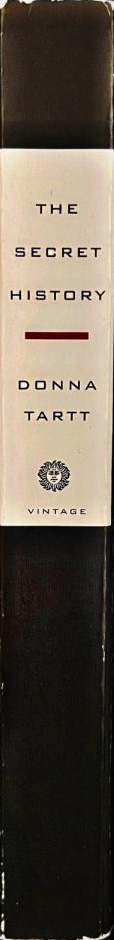
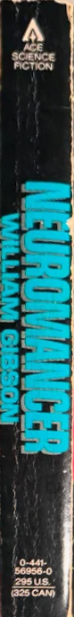
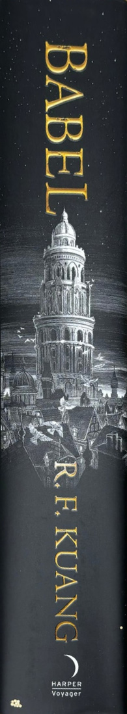

Currently Reading

TBR


Finished

The Secret History
Donna Tartt
Dark Academia, Fiction, Mystery, Classics
559 pages
Summary
"Under the influence of their charismatic classics professor, a group of clever, eccentric misfits at an elite New England college discover a way of thinking and living that is a world away from the humdrum existence of their contemporaries. But when they go beyond the boundaries of normal morality they slip gradually from obsession to corruption and betrayal, and at last—inexorably—into evil."
My Notes
So I had to read this for class, and let's just say I think it's gotten me out of my reading slump. I didn't have it at first and had to find a copy online until it came in, in which it said that Richard grew up in "Piano, California," and not "Plano, California." Very funny mistake to make when I went to class and we started talking about Plano and not Piano.
I didn't think I'd really like it at first - Richard just keeps narrating and saying shit about how he longed to be an orphan like the twins. I mocked him and his narration. Now, I've come to love it. I love this group of weirdos bonding over morally questionable acts. I'm almost done and I can't wait to see how this dumpster fire of a friend group turns out in the end!
Rip Bunny Corcoran, you would've loved ragebaiting